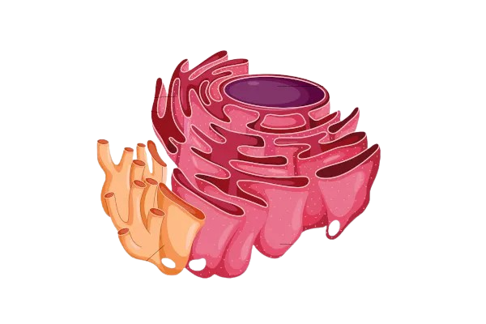

Organelas da Célula Vegetal
Explore abaixo as principais organelas que compõem a célula vegetal e
suas funções. Depois role até o fim da página e volte para a tela
inicial, agora com mais entendimento após ter analisado todas as
organelas que esse tipo de célula apresenta. E veja de novo as
representações das organelas em nossa maquete!
Cloroplasto
realiza o processo de fotossíntese nas células vegetais (plantas) e protistas (algas)
Ribossomos
Produzem proteínas, podendo estar livres no citoplasma ou no retículo rugoso.

Retículo Endoplasmático Rugoso e Liso
Mitocôndria
Produz energia (ATP) por meio da respiração celular.
Parede Celular
Estrutura rígida de celulose que garante forma, proteção e sustentação.
Retículo Endoplasmático
Liso: síntese de lipídios. Rugoso: síntese de proteínas (com ribossomos).
Complexo de Golgi
Empacota, armazena e secreta substâncias, formando também lisossomos.
Ribossomos
Produzem proteínas, podendo estar livres no citoplasma ou no retículo rugoso.
Citoplasma
Fluido gelatinoso onde ficam mergulhadas as organelas celulares.
Membrana Plasmática
Camada que envolve a célula, controlando a entrada e saída de substâncias.
Voltar para a Célula